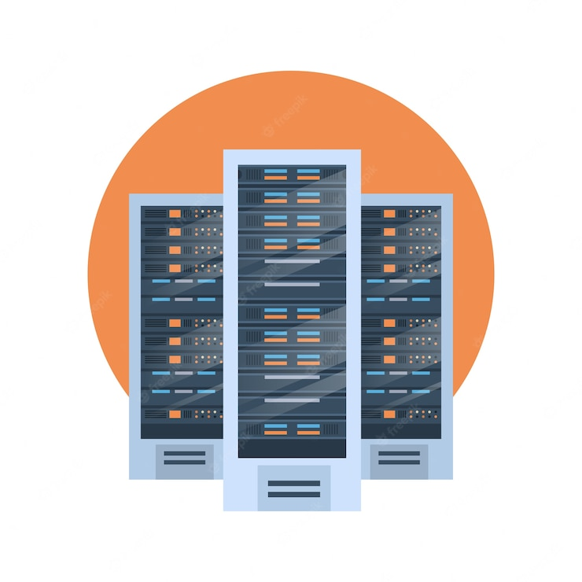

1/ Les avantages des centres de données :

1/ Il offre des services aux clients basés sur des tarifs abordables dans divers plans selon la période de location et les exigences.
2/ Il offre des logiciel et matériel robuste.
3/ Il offre d'excellentes performances système en répartissant la charge sur les nœuds du cluster.
4/ Les utilisateurs ou les clients n'ont pas à se soucier d'embaucher des personnes pour la maintenance afin de gérer les centres de données.
5/ Les centres de données offrent une évolutivité instantanée en fonction des modifications des besoins en capacité des clients.
6/ Les services sont toujours disponibles et sans aucun basculement grâce à la sauvegarde des systèmes.
2/ Les inconvénients des centres de données :
1/ Les entreprises qui embauchent les ressources des fournisseurs de centres de données n'auront pas un contrôle total localement.
2/ L'utilisation et la qualité des services du centre de données varient en fonction de la connectivité Internet dans les locaux du client.
3/ Les fonctionnalités de sécurité proposées par les fournisseurs de services de centres de données sont limitées.
4/ Certaines entreprises facturent des frais de support technique aux clients.
5/ En cas de dépannage et de problèmes, les clients doivent s'appuyer sur le personnel d'assistance des fournisseurs de centres de données. Par conséquent, la résolution de la même chose dépend des compétences et des connaissances du personnel de soutien.
 vers le haut
vers le haut